Jump to a section
43 · Dealing with Data
Refined 15 October 2026 from the supplied Joe Natoli course notes. Original wording and captures remain preserved.
Core principle
Choose data presentation according to the question the viewer must answer. Tables support exact lookup; charts support appropriate patterns and comparisons.
Application to game tools
Show affected asset, before/after, unit, status and useful next action. Let the artist inspect details behind a summary.
Assessment and qualification
Informative graphics still encode selection and framing choices. Avoid declaring a chart bias-free or dismissing all dense views as useless.
Try it
Does the view answer what changed and what remains uncertain?
Source: 43 Dealing with Data.md
Study detail and teaching translation
Start with the question the audience needs to answer. Exact lookup, comparison, change over time and distribution are different information needs.
Tables can preserve precise values; a suitable chart can reveal a pattern. The choice should reflect the task rather than a preference for a visually impressive graphic.
Teaching adaptation: an asset preview needs identity, proposed change and exceptions. A production overview may benefit from thumbnails and status summaries, with exact records still available.
Original captures
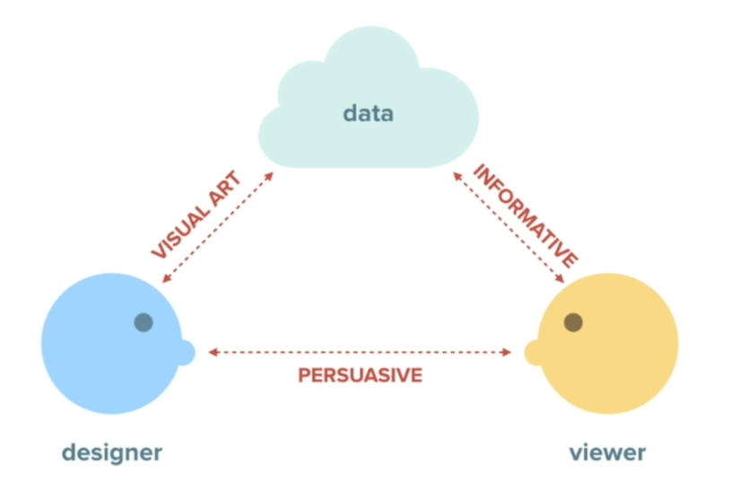
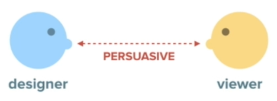
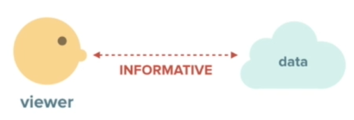
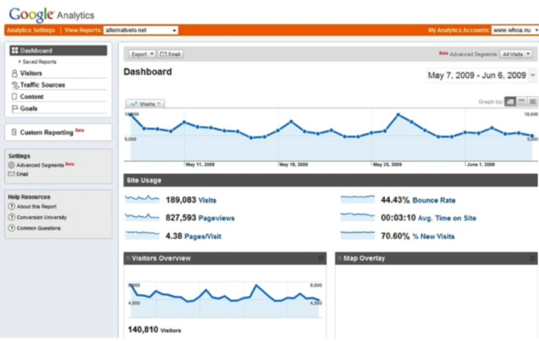
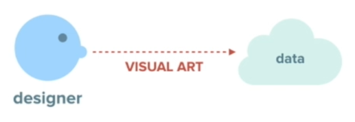
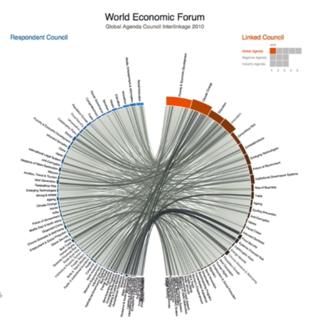
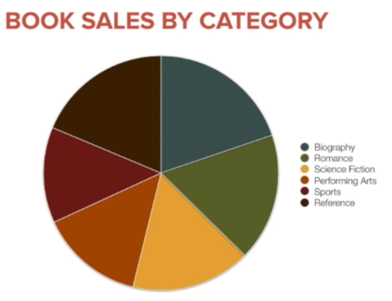
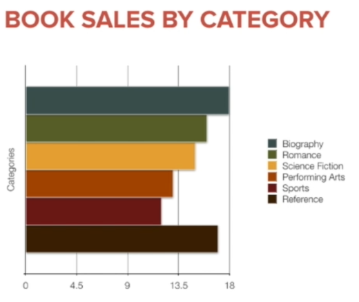
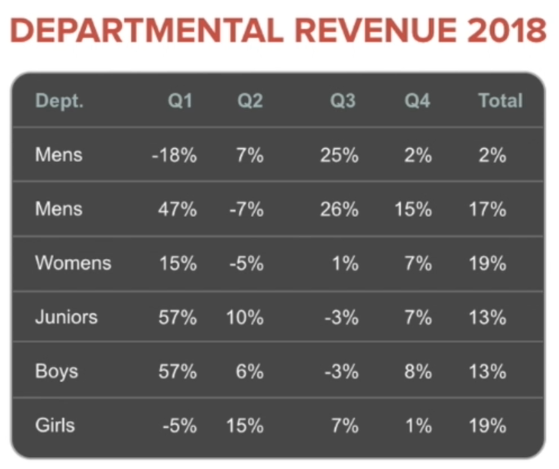
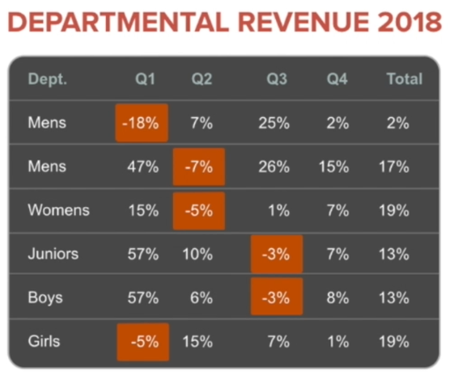
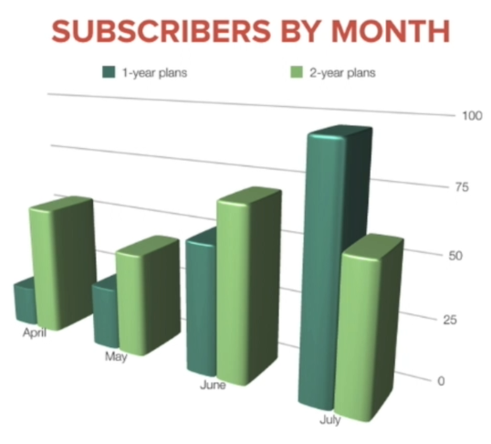
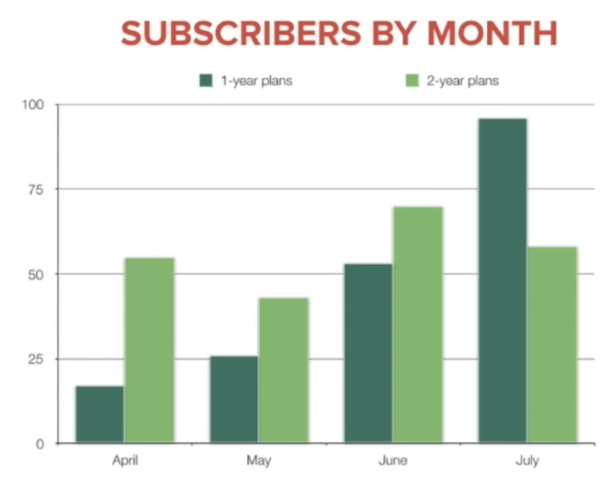